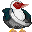

バリケンイエロー ごましお
名前 / 年齢
潮川麻胡（しおかわまこ） / 19歳
誕生日 / 血液型
6月13日 双子座 / Ｏ
職業
大学生
家族構成
父・海苔介、母・糖子、妹・椒胡、犬・むめ
家政系大学に通う、現在一回生。夢は「可愛いお嫁さんｖ」
料理上手で人に自分の料理を食べて貰うのが好き。
おっさんのセクハラに負けず、やられたらやり返すをモットーに日々頑張っている。
華子に憧れている。